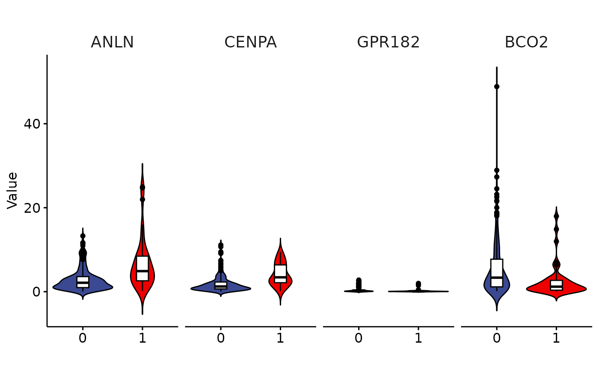

R/Common.R
plotJitterBoxplot.RdBoxplot with jitter, barplot with mean_se, violin plot with box
plotJitterBoxplot( xvalues, yvalues, group, title = "", xlab = "", ylab = "Value", group.name = "Group", color = "aaas", color.by.x = FALSE, comparisons = NULL, method = "wilcox.test", label.y = NULL, add = NULL, alternative = "two.sided", rotate.x = 0, outlier.shape = 19, ylim = NULL, stat = FALSE, barplot = FALSE, violin = FALSE, facet = FALSE, dotplot = FALSE, shape.color.by = "black", fill.color.by = NULL, legend.pos = "", group.position = ggplot2::position_dodge(0.9), remove.element = NULL, element_text_size = 14, facet.n.row = 1 )
| group | vector |
|---|---|
| group.name | Default "Group" |
| color.by.x | Group by x lab. In this way we can perform stats |
| comparisons | list( c("N", "T") ) |
| method | wilcox.test or t.test |
| add | Default jitter for boxplot, mean_se for barplot, boxplot for violin and dot plot. character vector for adding another plot element (e.g.: dot plot or error bars). Allowed values are one or the combination of: "none", "dotplot", "jitter", "boxplot", "point", "mean", "mean_se", "mean_sd", "mean_ci", "mean_range", "median", "median_iqr", "median_hilow", "median_q1q3", "median_mad", "median_range"; see ?desc_statby for more details. |
| alternative | should be one of “two.sided”, “less”, “greater” |
| rotate.x | Default 0. numeric value specifying the rotation angle. 90 for vertical x-axis text. |
| outlier.shape | point shape of outlier. Default is 19. To hide outlier, specify outlier.shape = NA. When jitter is added, then outliers will be automatically hidden. |
| stat | Default FALSE |
| facet | stat can work only after setting facet=TRUE |
| shape.color.by | Default "black". If you want set the color by group, please set the group name (Default "Group"). Shape color by group |
| fill.color.by | Default by "Group". If you want set the color by group, please set the group name (Default "Group"). Shape color by group |
| legend.pos | one of c("", "top", "bottom", "left", "right", "none") |
| group.position | Allowed values include "identity", "stack", "dodge", "position_dodge(0.9)", position_stack(). Position adjustment, either as a string, or the result of a call to a position adjustment function |
| remove.element | Please refer https://rpkgs.datanovia.com/ggpubr/reference/rremove.html |
| element_text_size | Facet title text size |
| facet.n.row |
data("LIRI") d.frame = LIRI[,3:6] group = LIRI$status liri.melt <- loonR::meltDataFrameByGroup(d.frame, group) xvalues=liri.melt$Gene yvalues=liri.melt$value group=liri.melt$Group loonR::plotJitterBoxplot(xvalues, yvalues, group, violin = T, facet = T) 